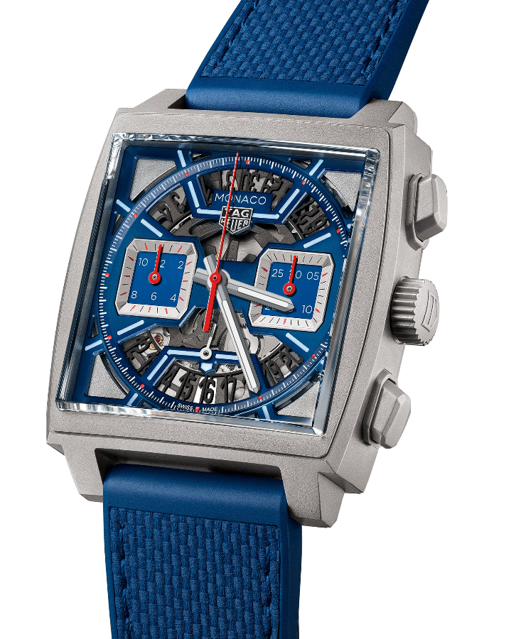
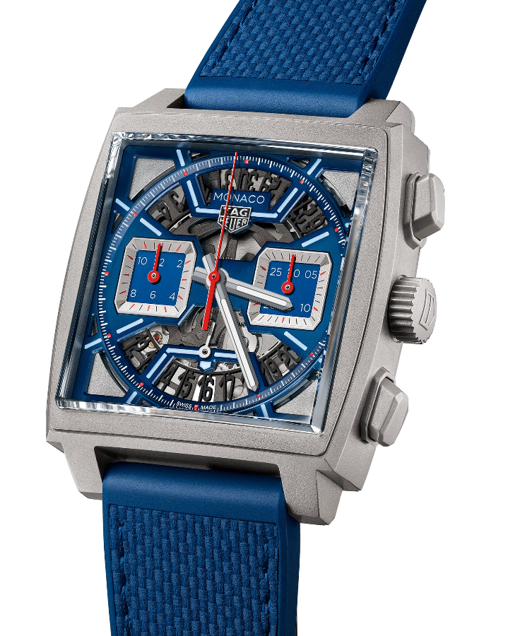

COLECCIONES
TAG HEUER CARRERA
La colección TAG Heuer Carrera es el reloj deportivo de un triunfador siempre atento al rendimiento. El reloj, que fue creado como homenaje a la famosa y peligrosa Carrera Panamericana de automovilismo, fue el primer cronógrafo específicamente diseñado para el piloto profesional.
VerTAG HEUER FORMULA 1
Otra colección también vinculada al automovilismo, aunque con un enfoque más moderno e innovador, es la TAG Heuer Formula 1. Esta colección, inspirada en la tecnología más avanzada inherente a la Formula 1, es lo bastante sólida para los profesionales y lo suficientemente elegante para lucir a diario gracias a sus cómodos y coloridos materiales.
VerTAG HEUER ACQUARACER
Los relojes TAG Heuer Aquaracer 300 M son modelos fiables y estancos hasta los 300 metros. Descubra los modelos automáticos y de cuarzo de la gama Aquaracer 300 M.
VerTAG HEUER MONACO
El TAG Heuer Monaco, pieza imprescindible para los fieles del automovilismo y los coleccionistas, se distingue por su gran caja de ángulos rectos y su cristal biselado de zafiro, un material totalmente resistente a los arañazos.
VerTAG HEUER CONNECTED
TAG Heuer reinventa los relojes inteligentes de lujo con la presentación de diseños elegantes y funcionalidades innovadoras. Tanto si desea comprobar su rendimiento, controlar su salud o simplemente permanecer conectado, gestione su vida digital con facilidad y prepárese para cualquier situación con su reloj TAG Heuer Connected. El concepto evolutivo le permite personalizar su reloj a su gusto: pase de una correa de piel a una de caucho, cambie la esfera del reloj con un simple clic o escoja diferentes colores en función de su atuendo para conseguir un estilo completamente nuevo.
Ver

 
